Gaussian Process Software
This page describes examples of how to use the Gaussian Process Software (GP).
The GP software can be downloaded here.
Release Information
Current release is 0.137.
As well as downloading the GP software you need to obtain the toolboxes specified below. These can be downloaded using the same password you get from registering for the GP software.
| Toolbox | Version |
| NETLAB | 3.3 |
| MOCAP | 0.136 |
| NDLUTIL | 0.162 |
| PRIOR | 0.22 |
| MLTOOLS | 0.138 |
| MOCAP | 0.136 |
| OPTIMI | 0.132 |
| DATASETS | 0.1371 |
| KERN | 0.226 |
| NOISE | 0.141 |
Version 0.136
Changes to gpReadFromFID for compatibility with C++ code.
Version 0.135
Modifications by Carl Henrik Ek for compatability with the SGPLVM toolbox.
Version 0.134
Updates to allow deconstruction of model files when writing to disk (gpWriteResult, gpLoadResult, gpDeconstruct, gpReconstruct).
Version 0.133
Updates for running a GPLVM/GP using the data's inner product matrix for Interspeech synthesis demos.
Version 0.132
Examples transfered from oxford toolbox, variational approximation from Titsias added as an option with 'dtcvar'.
Version 0.131
Changes to allow compatibility with SGPLVM and NCCA toolboxes.
Version 0.13
Changes to allow more flexibility in optimisation of beta.
Version 0.12
Various minor changes for enabling back constraints in hierarchical GP-LVM models.
Version 0.11
Changes include the use of the optimiDefaultConstraint('positive') to obtain the function to constrain beta to be positive (which now returns 'exp' rather than 'negLogLogit' which was previously the default). Similarly default optimiser is now given by a command in optimiDefaultOptimiser.
Version 0.1
The first version which is spun out of the FGPLVM toolbox. The corresponding FGPLVM toolbox is 0.15.
Release 0.1 splits away the Gaussian process section of the FGPLVM toolbox into this separate toolbox.
Other GP related software
The GP-LVM C++ software is available from here.
The IVM C++ software is available from here.
The MATLAB IVM toolbox is available here here.
The original MATLAB GP-LVM toolbox is available here here.
Examples
Functions from Gaussians
This example shows how points which look like they come from a function to be sampled from a Gaussian distribution. The sample is 25 dimensional and is from a Gaussian with a particular covariance.
>> demGpSample


Left A single, 25 dimensional, sample from a Gaussian distribution. Right the covariance matrix of the Gaussian distribution..
Joint Distribution over two Variables
Gaussian processes are about conditioning a Gaussian distribution on the training data to make the test predictions. To illustrate this process, we can look at the joint distribution over two variables.
>> demGpCov2D([1 2])
Gives the joint distribution for f1 and f2. The plots show the joint distributions as well as the conditional for f2 given f1.


Left Blue line is contour of joint distribution over the variables f1 and f2. Green line indicates an observation of f1. Red line is conditional distribution of f2 given f1. Right Similar for f1 and f5.
Different Samples from Gaussian Processes
A script is provided which samples from a Gaussian process with the provided covariance function.
>> gpSample('rbf', 10, [1 1], [-3 3], 1e5)
will give 10 samples from an RBF covariance function with a parameter vector given by [1 1] (inverse width 1, variance 1) across the range -3 to 3 on the x-axis. The random seed will be set to 1e5.
>> gpSample('rbf', 10, [16 1], [-3 3], 1e5)
is similar, but the inverse width is now set to 16 (length scale 0.25).
 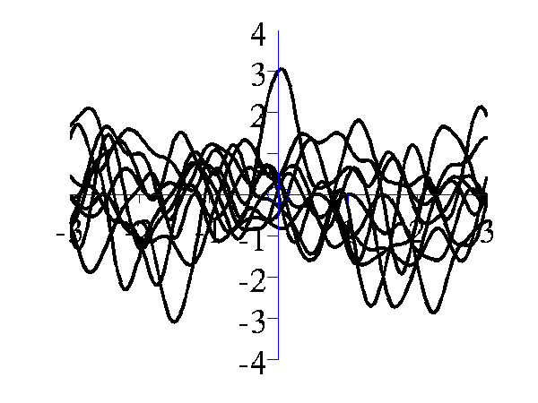
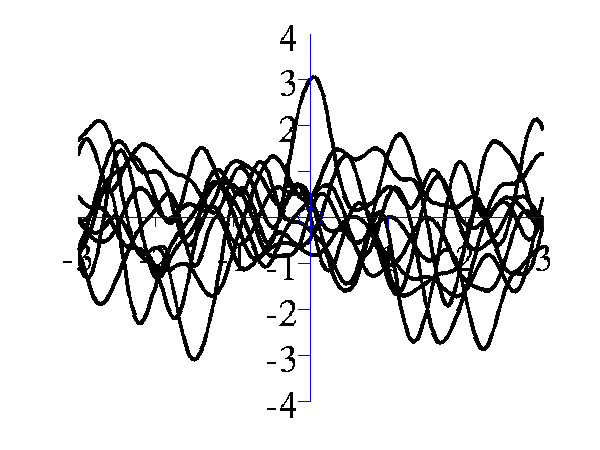Left samples from an RBF style covariance function with length scale 1. Right samples from an RBF style covariance function with length scale 0.25.
Other covariance functions can be sampled, an interesting one is the MLP covariance which is non stationary and can produce point symmetric functions,
>> gpSample('mlp', 10, [100 100 1], [-1 1], 1e5)
gives 10 samples from the MLP covariance function where the "bias
variance" is 100 (basis functions are centered around the origin
with standard deviation of 10) and the "weight variance" is
100.
>> gpSample('mlp', 10, [100 1e-16 1], [-1 1], 1e5)
gives 10 samples from the MLP covariance function where the "bias
variance" is approximately zero (basis functions are placed on
the origin) and the "weight variance" is 100.
 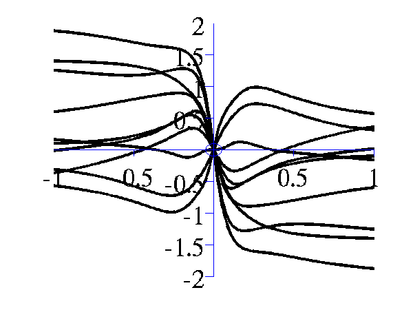
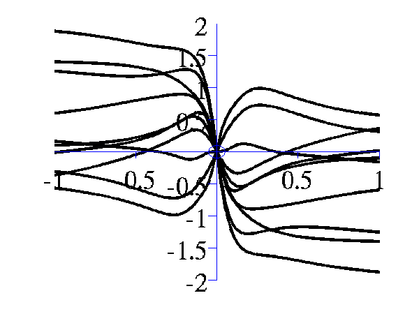Left samples from an MLP style covariance function with bias and weight variances set to 100. Right samples from an MLP style covariance function with weight variance 100 and bias variance approximately zero.
Posterior Samples
Gaussian processes are non-parametric models. They are specified by their covariance function and a mean function. When combined with data observations a posterior Gaussian process is induced. The demos below show samples from that posterior.
>> gpPosteriorSample('rbf', 5, [1 1], [-3 3], 1e5)
and
>> gpPosteriorSample('rbf', 5, [16 1], [-3 3], 1e5)
 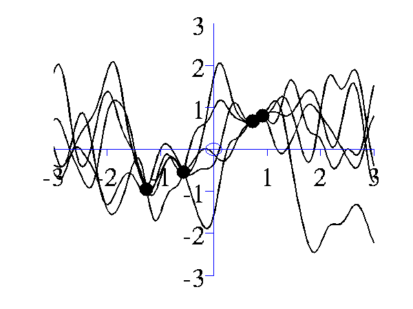
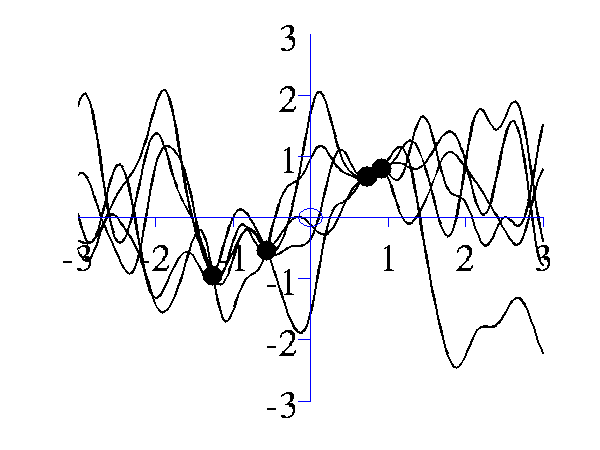Left samples from the posterior induced by an RBF style covariance function with length scale 1 and 5 "training" data points taken from a sine wave. Right Similar but for a length scale of 0.25.
Simple Interpolation Demo
This simple demonstration plots, consecutively, an increasing number of data points, followed by an interpolated fit through the data points using a Gaussian process. This is a noiseless system, and the data is sampled from a GP with a known covariance function. The curve is then recovered with minimal uncertainty after only nine data points are included. The code is run with
>> demInterpolation


Gaussian process prediction left after two points with a new data point sampled right after the new data point is included in the prediction.


Gaussian process prediction left after five points with a four new data point sampled right after all nine data points are included.
Simple Regression Demo
The regression demo very much follows the format of the interpolation demo. Here the difference is that the data is sampled with noise. Fitting a model with noise means that the regression will not necessarily pass right through each data point. The code is run with
>> demRegression


Gaussian process prediction left after two points with a new data point sampled right after the new data point is included in the prediction.


Gaussian process prediction left after five points with a four new data point sampled right after all nine data points are included.
Optimizing Hyper Parameters
One of the advantages of Gaussian processes over pure kernel interpretations of regression is the ability to select the hyper parameters of the kernel automatically. The demo
>> demOptimiseGp
shows a series of plots of a Gaussian process with different length scales fitted to six data points. For each plot there is a corresponding plot of the log likelihood. The log likelihood peaks for a length scale equal to 1. This was the length scale used to generate the data.
 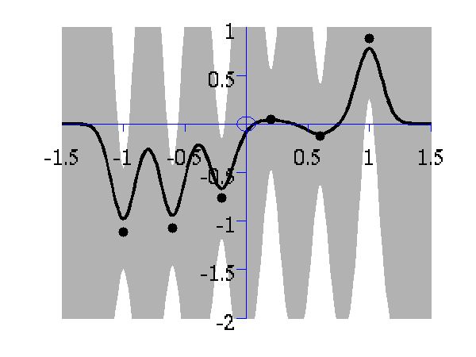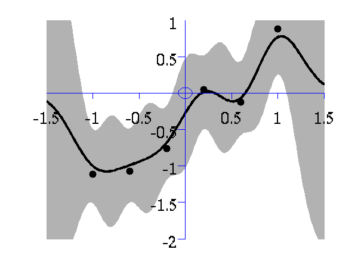
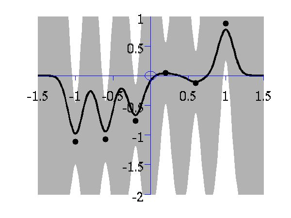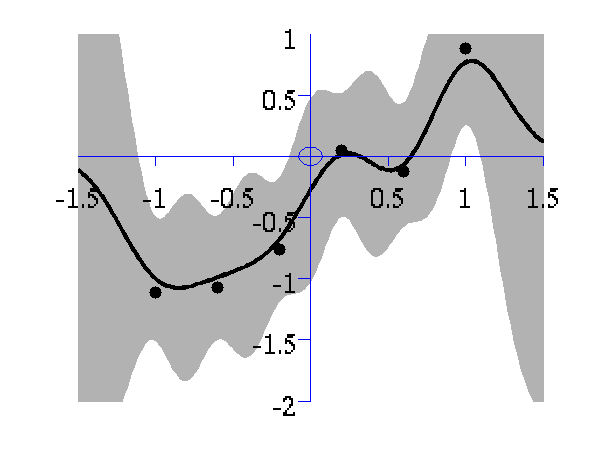


From top left to bottom right, Gaussian process regression applied to the data with an increasing length scale. The length scales used were 0.05, 0.1, 0.25, 0.5, 1, 2, 4, 8 and 16.

Log-log plot of the log likelihood of the data against the length scales. The log likelihood is shown as a solid line. The log likelihood is made up of a data fit term (the quadratic form) shown by a dashed line and a complexity term (the log determinant) shown by a dotted line. The data fit is larger for short length scales, the complexity is larger for long length scales. The combination leads to a maximum around the true length scale value of 1.
Regression over Motion Capture Markers
As a simple example of regression for real data we consider a motion capture data set. The data is from Ohio State University. In the example script we perform Gaussian process regression with time as the input and the x,y,z position of the marker attached to the left ankle. To demonstrate the behavior of the model when the marker is lost, we remove data from This code can be run with
>> demStickGp1
The code will optimize hyper parameters and show plots of the posterior process through the training data and the missing test points.
The result of the script is given in the plot below.


Gaussian process regression through the x (left), y (middle) and z (right) position of the left ankle. Training data is shown as black spots, test points removed to simulate a lost marker are shown as circles, posterior mean prediction is shown as a black line and two standard deviations are given as grey shading.
Notice how the error bars are tight except in the region where the training data is missing and in the region where the training data disappears.
Sparse Pseudo-input Gaussian Processes
The sparse approximation used in this toolbox is based on the Sparse Pseudo-input Gaussian Process model described by Snelson and Ghahramani. Also provided are the extensions suggested by Quiñonero-Candela and Rasmussen. They provide a unifying terminology for describing these approximations which we shall use in what follows.
There are three demos provided for Gaussian process regression in 1-D. They each use a different form of likelihood approximation. The first demonstration uses the "projected latent variable" approach first described by Csato and Opper and later used by Seeger et al.. In the terminology of Quiñonero-Candela and Rasmussen (QR-terminology) this is known as the "deterministic training conditional" (DTC) approximation.
To use this approximation the following script can be run.
>> demSpgp1dGp1
The result of the script is given in the plot below.

Gaussian process using the DTC approximation with nine inducing variables. Data is shown as black spots, posterior mean prediction is shown as a black line and two standard deviations are given as grey shading.
The improved approximation suggested by Snelson and Ghahramani, in QR-terminology this is known as the fully independent training conditional (FITC). To try this approximation run the following script
>> demSpgp1dGp2
The result of the script is given on the left of the plot below.
 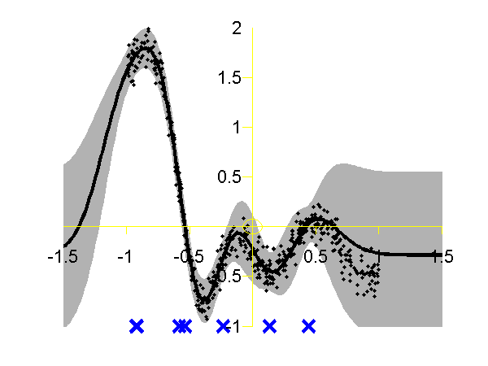
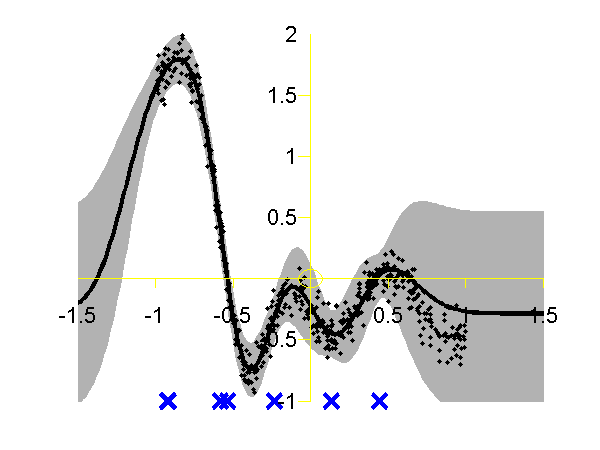Left: Gaussian process using the FITC approximation with nine inducing variables. Data is shown as black spots, posterior mean prediction is shown as a black line and two standard deviations are given as grey shading. Right: Similar but for the PITC approximation, again with nine inducing variables.
At the Sheffield Gaussian Process Round Table Lehel Csato pointed out that the Bayesian Committee Machine of Schwaighofer and Tresp can also be viewed within the same framework. This idea is formalised in Quiñonero-Candela and Rasmussen's review. This approximation is known as the "partially independent training conditional" (PITC) in QR-terminology. To try this approximation run the following script
>> demSpgp1dGp3
The result of the script is given on the right of the plot above.
Finally we can compare these results to the result from the full Gaussian process on the data with the correct hyper-parameters. To do this the following script can be run.
>> demSpgp1dGp4
The result of the script is given in the plot below.

Full Gaussian process on the toy data with the correct hyper-parameters. Data is shown as black spots, posterior mean prediction is shown as a black line and two standard deviations are given as grey shaded area.